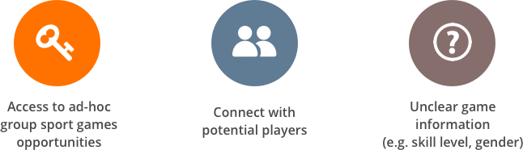
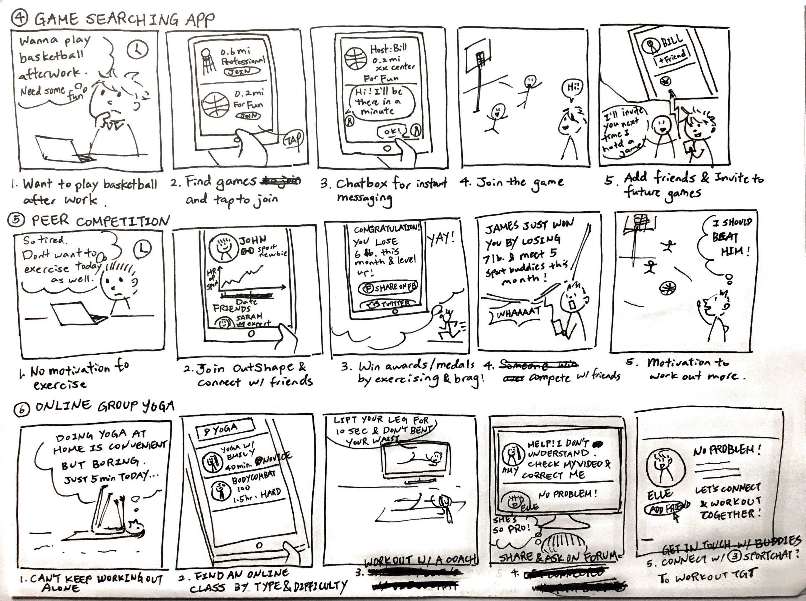

BuddyUp
A sport matching mobile app to bring sport-loving busy individuals back to the field
Interaction Design
Project Type
Interaction Design
Solo Project
Duration
Fall 2017 (3 months)
Role
Interaction Designer
Skills
Wireframing, Storyboard
Prototyping, Personas
Sketching, Competitive Analysis
The Challenge
BRIDGE THE GAP
People enjoy not only the physical exercise but also the social contact between people from team sports. Team sports support people’s healthy lifestyle and avoid social isolation. However, gathering enough people for a good match is difficult even with existing social media services.
Design Process
ITERATE FOR REAL NEEDS
BuddyUp is a mobile app design of a semester-long solo project. I conducted the end-to-end research and design process, from stalking sport players on the field to validating design decisions by testing with target users. My design evolved along several rounds of iteration at different stages.
Research
NEEDFINDING TO FRAME THE PROBLEM
INTERVIEW
I conducted several rounds of Interviews with a total of 10 amateur sport players to identify their pain points. It turned out that their frustrations stemmed from three aspects:
“I can’t go jogging for 2 hours in a row because i get bored, but for group sports like badminton, it’s fun and I can play for 2 hours.”
“There are regular games on Wednesdays, but I cannot make it.”
“I felt guilty joining the game [for dragging my team].”
COMPETITIVE ANALYSIS
I analyzed multiple existing matching platforms, both physical and digital, including Meetup, Facebook groups, student clubs and Bvddy, to explore the current solution space users can utilize to find a team sport game to join. I discovered three main gaps that led to users’ frustrations.

Ideation
BRAINSTORM & STORYBOARD
Based on the findings, I brainstormed for several solutions to tackle the users’ needs, and then expanded the sketches into scenarios that captured users’ pain points, emotion and interactions with each solution.
PERSONAS
I created multiple pro-personas and an anti-persona based on the initial research and testings. The personas represent users’ goals and pain points that helped me to prioritize different user needs to guide the converging phase of my design process.
NARROW DOWN THE FOCUS
Along the research phase, I constantly held short user interviews with the artifacts at hand to validate the design concept. This phase also defied some of the assumptions I had in the brainstorming phase. For example, I assumed from literature that peer competition would motivate people to do sports, however, my target users commented on the sketch during the interviews, saying “I would not find motivation in competition in the sport context.”
Synthesizing the findings, I decided the overarching design rationale for the following design process.
ITERATION AND REFINEMENT
WIREFRAMES & QOC ANALYSIS
Based on the design rationale, I developed multiple wireframes with different task flows. I then evaluated and landed on the final flow by conducting Questions-Options-Criteria analysis and collecting user feedbacks.
I developed wireframes of different task flows to evaluate the number of screens and logic of design
LO-FI & HI-FI PROTOTYPES
Before crafting the high-fidelity prototype, I used paper prototype to evaluate the flow and interactions.
I then created hi-fi digital prototype with Sketch and InVision to yield more realistic experience. From high-level features to granular design elements, I tested and refined the design iteratively to achieve a final design that is easy-to-use and caters to the needs of the target users.
FINAL DESIGN
DESIGN FEATURES
LIVE PROTOTYPE
During user testing, I observed how users interacted with the live digital prototype and refined detailed design elements, such as whether a confirmation was needed for creating games.
IMPACT
Engage sports community
BuddyUp engages sport lovers beyond of their personal network and opens up opportunities to achieve their goal of staying healthy, social lifestyle
Bridge information gaps
BuddyUp uncovers the gaps of existing services that frustrate the target users and provides them a platform that caters to their needs
TAKEAWAY
I AM MY OWN USER, BUT I AM NOT LIKE MY USERS
My design problem stemmed from my personal experience and frustration. With users participating along my design process, I have gained more comprehensive understanding of different factors surrounding the problem to reduce my design bias. I also found the iterative approach extremely critical to my design, and prototyping rapidly played a role in the process. Getting feedback from real users helped me to validate the hypothesis and refine my design at all levels.